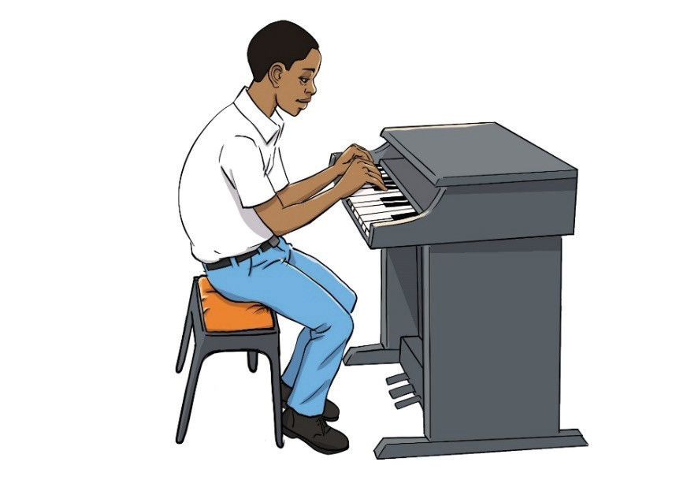

Figure 6.7: A wrong posture while playing piano
Activity 6.12
Activity icon

Sit on a piano and practise the correct posture.
Exercise 6.6
Answer the following questions.
1.
Why is it important to keep the back straight when playing the piano?
2.
How does relaxing your feet and shoulders help you play the piano better?
Piano fingering
In music, fingering refers to the order of fingers used when playing a certain instrument.
Correct fingering enables the player to easily move the hands and play correct notes.
Each finger is identified by a number: the thumb is numbered 1, the index finger is numbered 2, the middle finger is numbered 3, the ring finger is numbered 4, and the little finger is numbered 5.
Figure 6.8 shows fingers and their numbers for both hands.